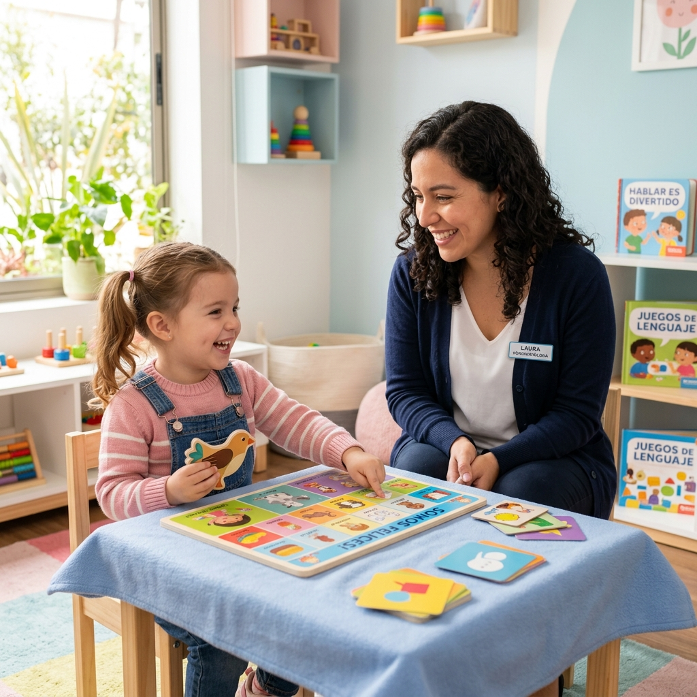
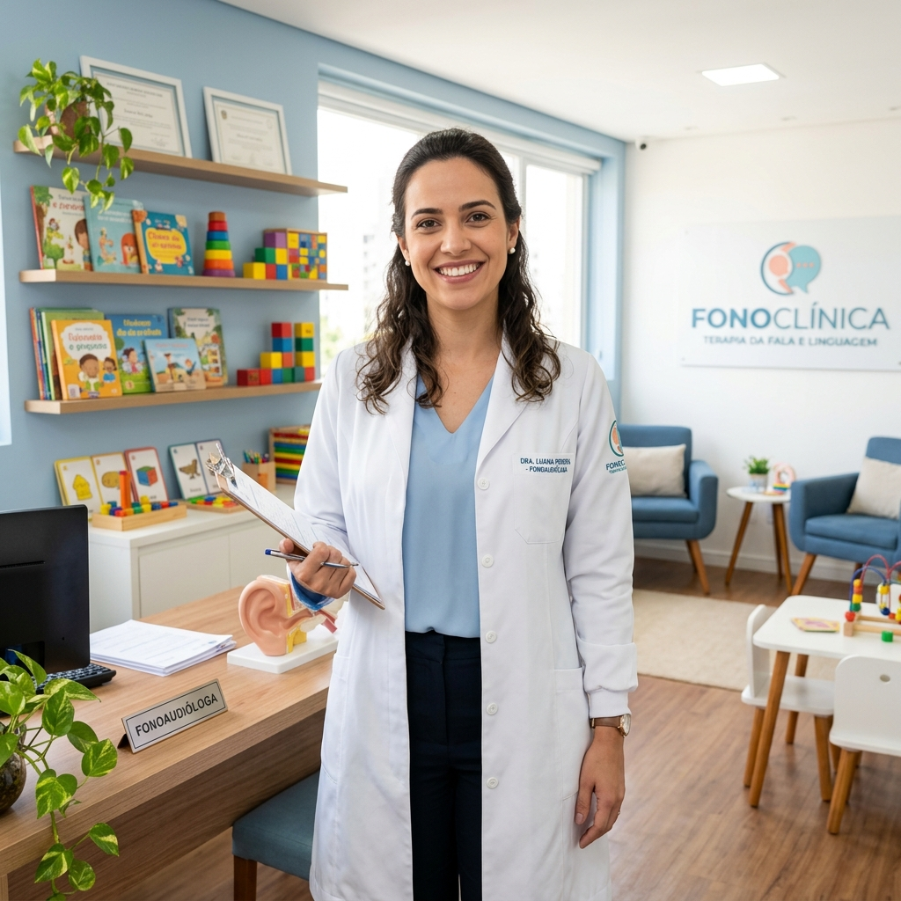

Promovemos o bem-estar e a qualidade de vida através de um cuidado humanizado com a sua comunicação, linguagem e audição. Descubra como podemos ajudar você a expressar o seu melhor lado.

Oferecemos tratamentos personalizados para todas as fases da vida, aliando ciência, técnica e muita empatia.
Estímulo lúdico para atrasos de fala e transtornos linguísticos, apoiando o desenvolvimento pleno da comunicação infantil.
Acompanhamento focado em performance e saúde vocal para cantores, professores, locutores e demais profissionais da voz.
Avaliação cuidadosa e adaptação de aparelhos auditivos (AASI), além de treinamento focado no processamento auditivo.

Com mais de uma década dedicada à área da saúde, minha maior paixão sempre foi ajudar pessoas a se conectarem com o mundo através de uma comunicação fluida, clara e eficiente.
Sou especialista em Voz e Desenvolvimento da Linguagem Infantil, formada pela Universidade Federal e com pós-graduação em Neuropsicologia. No meu consultório, acredito que cada paciente carrega uma história única. Por isso, aplico abordagens personalizadas e baseadas em evidências científicas.
A comunicação transforma relações e aproxima pessoas. Vamos juntos construir um caminho para que você ou seu familiar se expresse da melhor forma possível?
A maior recompensa pelo nosso trabalho é a evolução e o relato de quem confia em nós todos os dias.
"A Dra. Mariana foi fundamental na vida do meu filho. Ele lutava com um atraso severo na fala, e o acompanhamento empático dela mudou tudo. Hoje ele não para de falar; ver sua evolução é maravilhoso."
"Como professor, eu vivia ficando rouco e sentia dor ao fim do expediente. As técnicas que aprendi e os exercícios diários recuperaram minha saúde vocal e salvaram a minha carreira. Sou muito grato!"
"Voltar a ouvir com clareza as conversas em reuniões de família não tem preço. O suporte com a adaptação do meu aparelho foi com uma paciência e competência incríveis. Me sinto jovem outra vez."
Entre em contato e agende a sua avaliação inicial. Vamos escolher o melhor tratamento para atender suas necessidades.